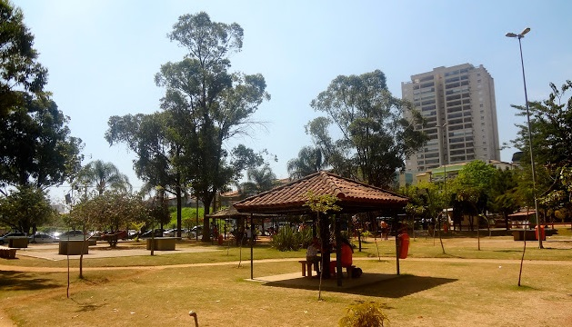
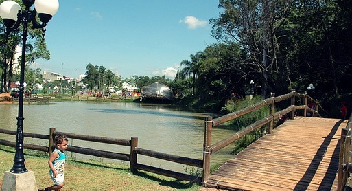

Park Gallery



Maia Park is a large urban park located in the city of Guarulhos, São Paulo, Brazil. It is one of the largest and most popular parks in the city, offering various recreational activities and green spaces for visitors to enjoy.
Maia park features walking and jogging trails, playgrounds, sports courts, picnic areas, and a large lake. It is a popular destination for families, joggers, cyclists, and nature lovers seeking a break from the hustle and bustle of city life.
The park is also known for its diverse flora and fauna, including native trees, plants, and bird species. It provides a peaceful and natural environment for visitors to relax and unwind.
Overall, Maia Park serves as an important green area within Guarulhos, providing residents and visitors with opportunities for outdoor recreation, leisure, and connection with nature.